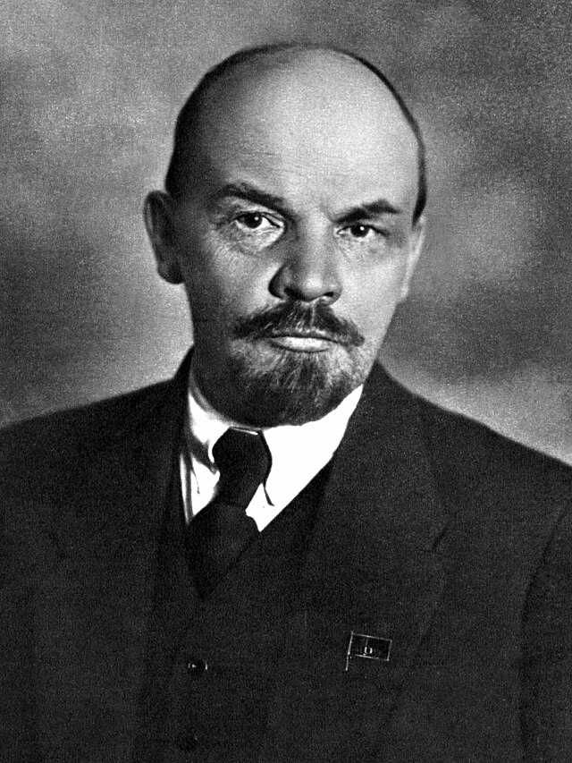

SumberVLADIMIR LENIN adalah pendiri Uni Soviet dan pemimpin utama Revolusi Bolshevik 1917. Ia mengembangkan teori Marxisme-Leninisme dan mendirikan pemerintahan komunis pertama di dunia.
Nama Asli: Vladimir Ilyich Ulyanov Lahir: 22 April 1870, Simbirsk, Kekaisaran Rusia (sekarang Ulyanovsk, Rusia) Meninggal: 21 Januari 1924, Gorki, Uni Soviet Jabatan: Pemimpin Uni Soviet (1917–1924), Ketua Dewan Komisaris Rakyat
Lenin berasal dari keluarga kelas menengah terdidik. Kakaknya, Alexander Ulyanov, dieksekusi oleh pemerintah Tsar karena berusaha membunuh Kaisar Alexander III, yang membuat Lenin tertarik pada revolusi. Ia belajar hukum di Universitas Kazan, tetapi dikeluarkan karena aktivitas politiknya.
Lenin mengembangkan ide Marxisme-Leninisme, yang menyerukan revolusi oleh kaum pekerja. Pada 1917, ia memimpin Revolusi Bolshevik, menggulingkan pemerintahan sementara dan mendirikan Republik Soviet. Setelah menang dalam Perang Saudara Rusia (1917–1922) melawan pasukan anti-komunis, ia membentuk Uni Soviet pada 1922. KEBIJAKAN DAN PEMERINTAHAN 1. Komunisme Perang (1918–1921) Nasionalisasi industri dan pengambilalihan hasil pertanian untuk mendukung Tentara Merah dalam Perang Saudara. Menyebabkan kelaparan besar, tetapi akhirnya memenangkan perang. 2. Kebijakan Ekonomi Baru (NEP) (1921) Mengizinkan sedikit kapitalisme di sektor pertanian dan perdagangan untuk memulihkan ekonomi. 3. Pendirian Uni Soviet (1922) Menggabungkan Rusia, Ukraina, Belarusia, dan negara-negara lain dalam satu negara komunis. AKHIR HIDUP DAN WARISAN Lenin mengalami stroke pertama pada 1922, yang membatasi perannya dalam pemerintahan. Ia memperingatkan bahaya Stalin dalam surat wasiatnya, tetapi Stalin tetap mengambil alih kekuasaan setelah Lenin meninggal pada 1924. Lenin dihormati di Uni Soviet sebagai bapak revolusi; jenazahnya diawetkan di Mausoleum Lenin di Moskwa.
✅ Dampak Positif: Menghapus sistem monarki Tsar Rusia dan mendirikan negara sosialis pertama. Memberikan hak pendidikan dan pekerjaan kepada rakyat miskin. ❌ Dampak Negatif: Rezimnya menggunakan represi politik, termasuk eksekusi terhadap lawan politik. Kebijakan Komunisme Perang menyebabkan kelaparan besar. Lenin tetap menjadi tokoh penting dalam sejarah dunia, dengan pemikirannya memengaruhi gerakan komunis di berbagai negara.